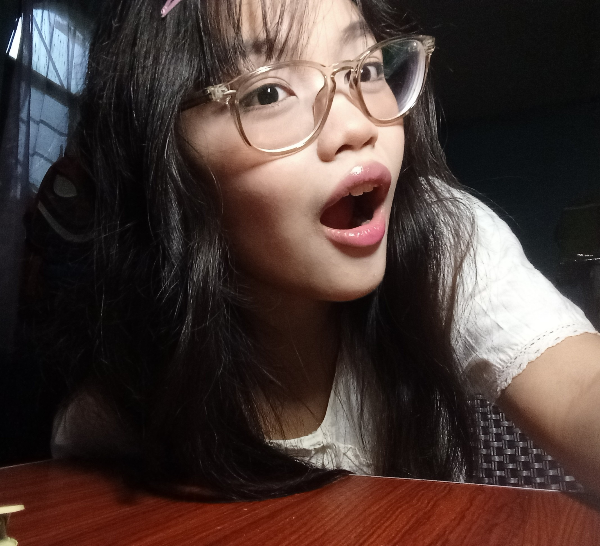
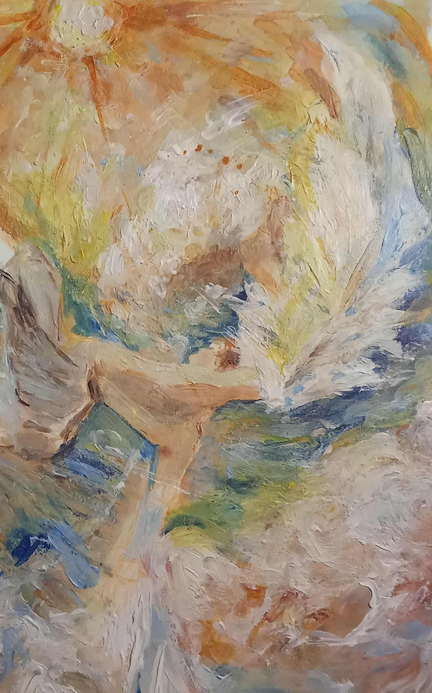
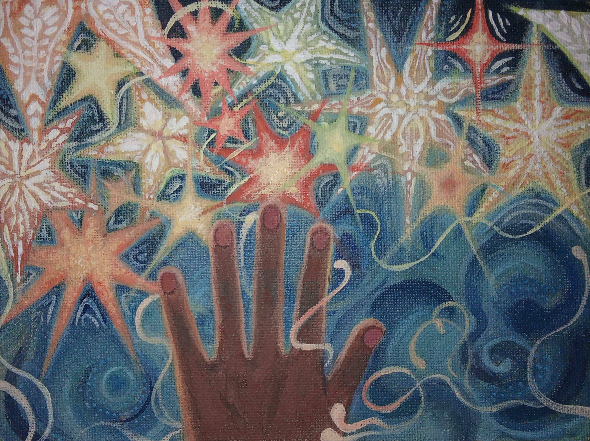
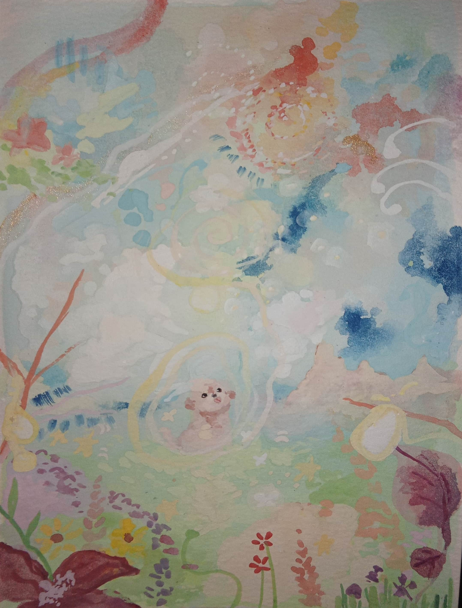
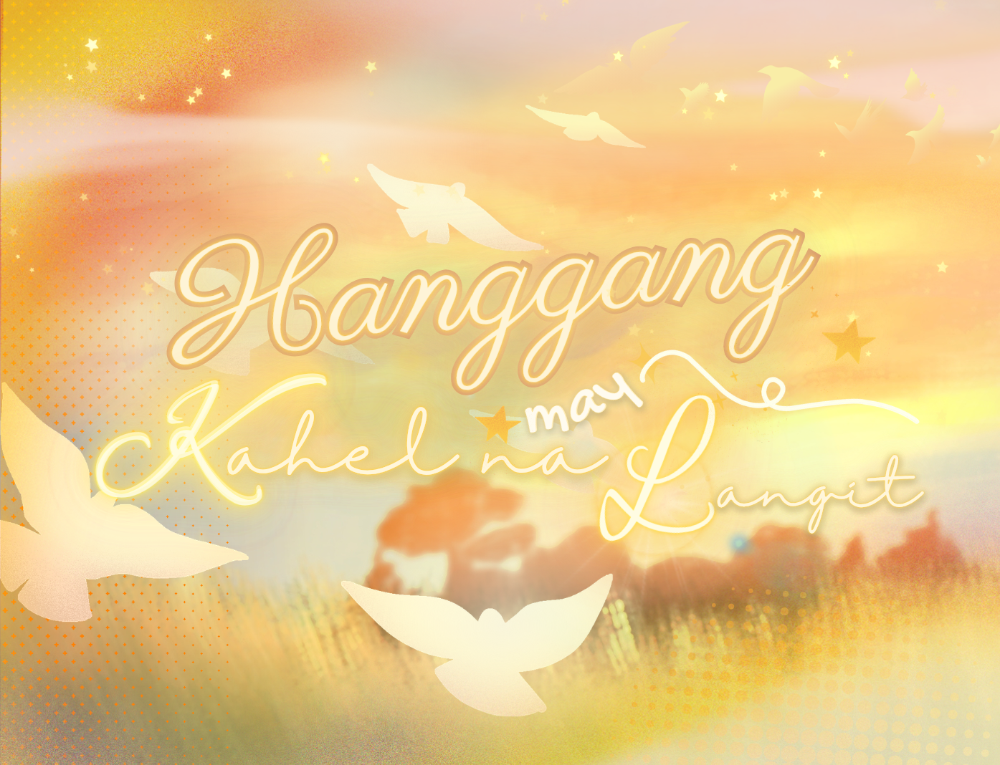
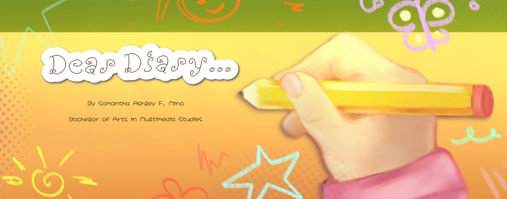
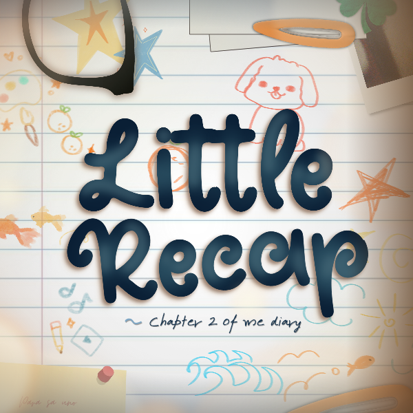

About Me

Just from the tag-line, yes, I'm a huge fan of the color Orange that when people closest to me saw orange — they reminded of me. From clothes, my wallpaper, keychains and even the style of my artwork, Orange will always be there. But why Orange? I always find something beautiful with Orange whenever I look it. Sunsets are my favorite and saturations caught my attention, it gives me the feeling of comfort and peacefulness, that I even want to paint the same feeling through papers or canvas. Hence, shaping my style through the years to be usually more vibrant and has that Orange hues that I find serene. Moreover about me, is that I'm a digital and traditional artist who loves to draw and paint abstracts, landscape and fictional characters. This is what I love to do when I was a kid and still carried it now that I'm in college, pursuing a program involving my creativity.
And you know what's beyond amazing? I just learned recently about the language or meaning of colors, and the coincidence that I learned orange is creativity, being adventurous and optimistic, which is eerily who I resembled myself as a person. And that's the summary of me.
Things I Love
- The color orange
- Painting
- Drawing
- Exploring other art mediums
- Listening to music
- Sunsets
- Goldfishes
- Dogs
- Baking
Passion Projects
My Art Journey
Art has been my hobby since I was six years old. I always find myself doing coloring books and drawing my favorite cartoon characters in my notebook. Ever since then, this hobby developed into a passion of mine as I grew up. I would attend poster competitions in Junior and Senior High School, there are times when I won and did not. Nonetheless, I enjoy every experience because it brings my relationship with art closer, that there is still something to improve and move forward to. I even told my family I want to pursue fine arts or programs related to arts at the University of the Philippines. They were doubtful about it, but I assure myself that even if I don't get it, I can still find ways to love the arts and continue my journey. And it leads me to these days when I join and try for organizations where I can express my creativity and make paintings that I find comforting and would make it a collection that I would name 'In Orange Fields'. It was unofficial or part of my goal, yet hopefully there would be a time when I would share my artworks. This is my small beginnings, and I'm determined to make further steps and improvements along the way.



Waiting in The Oven
My family once sell bake goods back in the pandemic and it inspires to do the same and tried to learn baking. For this project, I want to find more recipies that I want to experiment with the ones I already know, like maybe I can expand more than just chocolate chips.
Editing to my World
Digital Media is one of the things I really want to create, leading my iterest to create my own posters and videos for my own interest. Though, I want to improve and find the expression that I want aim for as I was unsure about my skills in this field. With the inspiration with the things I love, it keeps me to edit and learn more about graphic and video eidting.


